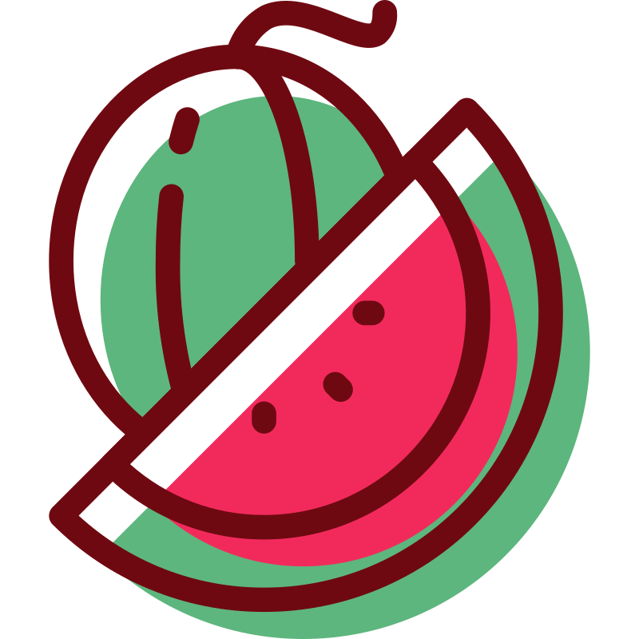

Vocabulary
Vocabulary
1. Key vocabulary & pronunciation
Read the new words aloud. Pay attention to the stressed syllable.
| Word | British transcription | Translation | Example |
|---|---|---|---|
| 1. a desert | /ˈdezət/ | пустеля | It is very hot in the desert during the day. |
| 2. a lake | /leɪk/ | озеро | There are many fish in this lake. |
| 3. grass | /ɡrɑːs/ | трава | The grass in the park is green and soft. |
| 4. a rock painting | /ˈrɒk ˌpeɪntɪŋ/ | наскельний малюнок | The museum has an old rock painting of a hunter. |
| 5. climate | /ˈklaɪmət/ | клімат | The climate in Spain is warm and sunny. |
| 6. rainfall | /ˈreɪnfɔːl/ | опади, кількість опадів | The rainfall in this city is low in summer. |
| 7. to dry up | /ˌdraɪ ˈʌp/ | висихати, пересихати | Rivers sometimes dry up in very hot summers. |
Увага: desert /ˈdezət/ (пустеля) читається інакше, ніж dessert /dɪˈzɜːt/ (десерт).
2. Exercise: fill in the blanks
Fill in the blanks with the words from the box. Use each word once.
grass · lake · rock painting · climate · dry up · rainfall · desert
- Camels can live in the because they don't need much water.
- We went fishing on the and swam in the clear water.
- The cows are eating fresh green in the field.
- The in Egypt is hot and dry all year.
- April is a rainy month, so the is high.
- There is no rain, and the farmer's small pond is going to .
- In the cave, we saw a of a horse. It was very old.

GrammarBlock 1: Used to — form and meaning
Конструкцію used to ми вживаємо, коли розповідаємо про щось, що було правдою або регулярно повторювалося в минулому, а тепер уже закінчилося. Вона описує:
- звички (дії, що повторювалися): People used to send paper letters.
- стани (було / мав / жив / любив): There used to be a cinema here, but now it's a shop.
| Тип речення | Формула | Приклад |
|---|---|---|
| Стверджувальне | Subject + used to + V1 | Computers used to be very big. |
| Заперечне | Subject + didn't use to + V1 | They didn't use to have smartphones. |
| Питальне | Did + Subject + use to + V1? | Did you use to watch cartoons? — Yes, I did. / No, I didn't. |
Запам'ятай:
- Після did / didn't пишемо use to (без -d): допоміжне дієслово вже показує минулий час — так само, як у Past Simple (did + V1).
- Used to існує тільки в минулому. Для теперішнього використовуємо Present Simple та слова usually / often: I usually save files online. (а не ✗ I use to save).
- Вимова: у used to ми чуємо /juːst tə/, а після did / didn't буква -d зникає, і вимовляємо /juːs tə/: didn't use to /ˈdɪdnt juːs tə/.
Exercise 1
A. Complete the text. Use used to, didn't use to or Did … use to for the past, and the Present Simple for today.
Mr. Brown is 80 years old. He remembers his street in the 1950s. Today the street (1. have) a lot of cars, but then it (2. be) very quiet. Children (3. play) football in the road because there (4. not / be) many cars. Today children (5. stay) at home and play games on their phones. (6. Mr. Brown / have) a TV when he was a boy? No, he (7. not / have) one. His family (8. listen) to the radio in the evening.
B. Each sentence has one mistake. Find it and write the correct sentence.
- She use to live in a small village.
- Did you used to have a dog?
- We didn't used to have a car.
- He used to played football every day.
- They not used to like fish.
- Did he use to went to this school?
C. Tom is 70 years old. Look at his childhood in the 1960s.
| Activity / State | Tom's childhood |
|---|---|
| 1. have a TV | ✗ |
| 2. listen to the radio in the evening | ✓ |
| 3. walk to school | ✓ |
| 4. play football in the street | ✓ |
| 5. have a phone at home | ✗ |
| 6. read comics | ✓ |
- Part 1: Make sentences about items 1–3 using used to or didn't use to.
- Part 2: Make questions with Did Tom use to …? about items 4–6 and answer them with short answers.
- Challenge: Make 2 more sentences about Tom's childhood using your own ideas.
Block 2: Used to vs. Past Simple
І used to, і Past Simple розповідають про минуле. Різниця — у тому, що саме ми хочемо сказати:
| Ознака | used to + V1 | Past Simple |
|---|---|---|
| Що означає | звичка або стан у минулому, який тривав довго й тепер уже закінчився | окрема одноразова дія в минулому або дія з точним часом / тривалістю |
| Із чим вживаємо | in the 1990s, when I was a child, in those days | yesterday, last year, in 2019, for five years, three times |
| Приклад | I used to play chess every day. | I played chess yesterday. |
Швидка перевірка: чи можна додати «але тепер уже ні»? Так → used to.
Не можна вживати used to, якщо названо точну кількість разів або точну тривалість:
- ✗ I used to visit Rome three times. → ✓ I visited Rome three times.
- ✗ He used to live in Lviv for two years. → ✓ He lived in Lviv for two years.
Exercise 2
A. Use used to / didn't use to where possible. If used to is NOT possible (single action, exact time, duration, or number of times), use the Past Simple.
- My brother (learn) to program in 2022.
- When he was small, he (be) afraid of dogs, but now he loves them.
- Last summer, we (visit) the science museum twice.
- I (live) in that house for six years before we moved.
- This lake (be) full of fish, but now it is completely dry.
- I (not / drink) tea when I was younger, but now I drink it every morning.
- She (buy) a new keyboard yesterday.
B. Find and correct 4 mistakes where used to is used incorrectly instead of the Past Simple.
When I was a child, I used to love books about dinosaurs. We used to live in a small town for five years, and there used to be a big library near our house. I used to go there every Saturday. Last weekend, I used to visit that town again! I used to walk past my old school three times, and yesterday I used to meet my old school friend for coffee.
Block 3: used to / be used to / get used to
Ці три конструкції виглядають схоже, але значення й граматика після них різні:
| Конструкція | Значення | Що після неї | Приклад |
|---|---|---|---|
| used to | раніше було, а зараз ні | V1 (infinitive) | I used to play the piano. |
| be used to | бути звиклим (стан) | noun або V-ing | I'm used to getting up early. |
| get used to | звикати (процес) | noun або V-ing | I'm getting used to my new phone. |
Запам'ятай:
- У be used to і get used to слово to — це прийменник (до чогось), тому після нього йде іменник або дієслово з закінченням -ing, а не V1.
- Порівняй: I used to live in a small town. (раніше жив) — I'm used to living in a big city. (я звик жити).
- be / get used to можна вживати в різних часах: I wasn't used to it. / You'll get used to it. / He isn't used to the cold.
Exercise 3
A. Put the verb in brackets into the correct form: V1 (after used to) or V-ing (after be / get used to).
- When I was little, I used to (watch) cartoons every morning.
- Programmers are used to (work) with long files.
- My new keyboard felt strange at first, but I'm slowly getting used to (type) on it.
- In the 1990s, computers used to (be) very big and slow.
- He is from Norway, so he isn't used to (live) in a hot climate.
- Don't worry! You will soon get used to (wake) up early for school.
B. Rewrite the sentences using the words in brackets so that they keep the same meaning.
- Waking up at 7 a.m. is normal for me now. (am used to) → I am used to waking up at 7 a.m.
- In the past, people rode horses, but now they drive cars. (used to)
- The hot desert climate is still strange and difficult for the tourists. (aren't used to)
- Your new glasses feel uncomfortable now, but soon they will feel normal. (will get used to)
- When she lived in London, driving on the left was normal for her. (was used to)
C. Translate into English.
- Раніше я часто грав у цю гру, але тепер не граю.
- Я ще не звик до цього нового телефона.
- Ти швидко звикнеш їздити на велосипеді в місті.
- Чи люди раніше писали паперові листи?
 Reading & Speaking
Reading & Speaking
1. Reading
The Sahara Used to Be Green
Today, the Sahara is a huge hot desert. There is sand and rock almost everywhere, and there are often years without rain. But 7,000 years ago, it looked very different.
At that time, the climate was wetter, and the Sahara didn't use to be a desert. The rainfall was much higher than today, so there used to be lakes, rivers and green grass. Hippos need a lot of water, and in the green Sahara they used to live in the lakes. Did people use to live there too? Yes, they did. They used to fish and keep cattle.
How do we know this? In the Sahara, there are thousands of old rock paintings. They show cattle and hippos — and hippos don't live in the Sahara now.
About 5,000 years ago, the rain became weaker. The lakes dried up, there was no more grass, and the green land became a desert.
- How was the Sahara different 7,000 years ago?
- What animals used to live there?
- How do we know about the green Sahara?
- What happened about 5,000 years ago?
2. Speaking, Stage 1: The Mystery of the Dry Lake
Seven thousand years ago, four people lived near a lake in the green Sahara: Amir, Bia, Kofi and Zara. Each person had a different job and worked in a different place. Archaeologists found these objects in each place. Use the Clue Card to decide who worked where.
| Place | Job | What archaeologists found |
|---|---|---|
| the lake (water) | fisher | fish bones |
| the grassland | cattle farmer | cattle bones |
| the caves | painter | a rock painting |
| the river (water) | potter | a clay pot |
Clue Card
Read the clues aloud and explain your thinking aloud using used to and didn't use to.
- Amir and Zara didn't use to spend time on the grassland.
- Kofi used to work near water.
- Zara didn't use to fish in the lake.
- Amir didn't use to work near water.
Useful speaking frames:
- Amir didn't use to work near water, so he didn't work at the lake or at the river.
- Kofi used to work near water, so he worked at the … or at the …
- …, so she worked at / on the …
- That means … Finally, … used to …
Solving Grid (mark ✓ / ✗)
| Person | the lake | the grassland | the caves | the river |
|---|---|---|---|---|
| Amir | ||||
| Bia | ||||
| Kofi | ||||
| Zara |
Check yourself
Explain the whole solution in 4 sentences. Then answer:
- Did Bia use to work near water?
- Where did Amir use to work, and what did he use to do?
- What did Kofi use to do?
- What didn't Zara use to do?
3. Speaking, Stage 2: Tour Guide
You are a tour guide in a museum of the Sahara. Using the keywords in the table, explain to visitors how the Sahara used to be and what is different today. Use used to at least four times and didn't use to at least once.
| Then (7,000 years ago) | Now |
|---|---|
| big lakes and rivers | sand and rock |
| green grass | few plants |
| much more rainfall | in many places no rain for years |
| hippos and cattle | lizards and snakes |
| people fish and keep cattle | few people live there and they travel with camels |
Finish your tour with this sentence: The rock paintings are still there, and they show us how the Sahara used to be.
 Homework
Homework
Homework
Write a short story (6–8 sentences). Use used to / didn't use to at least twice and be / get used to at least once.